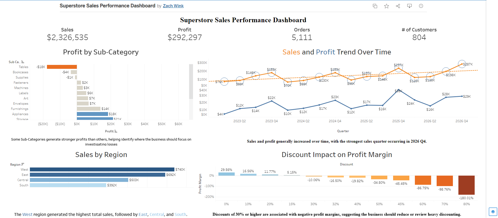

1. Superstore Sales Performance Dashboard
Analyzed 10,194 Superstore sales records to evaluate sales trends, regional performance, profitability, discount impact, and product performance.
Key Insight: Discounts of 30% or higher were associated with negative profit margins, suggesting the business should review heavy discounting strategies.